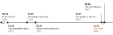

A. Horizontal, with a break

D. To scale, no break
B. Vertical
C. A 24-hour dial
One spec for all four: lab/tools/components/examples/the-day.json (the designer's, at d965985), every event a registered time with its claim id. A and B are the designer's timeline component; C and D are this experiment's own.